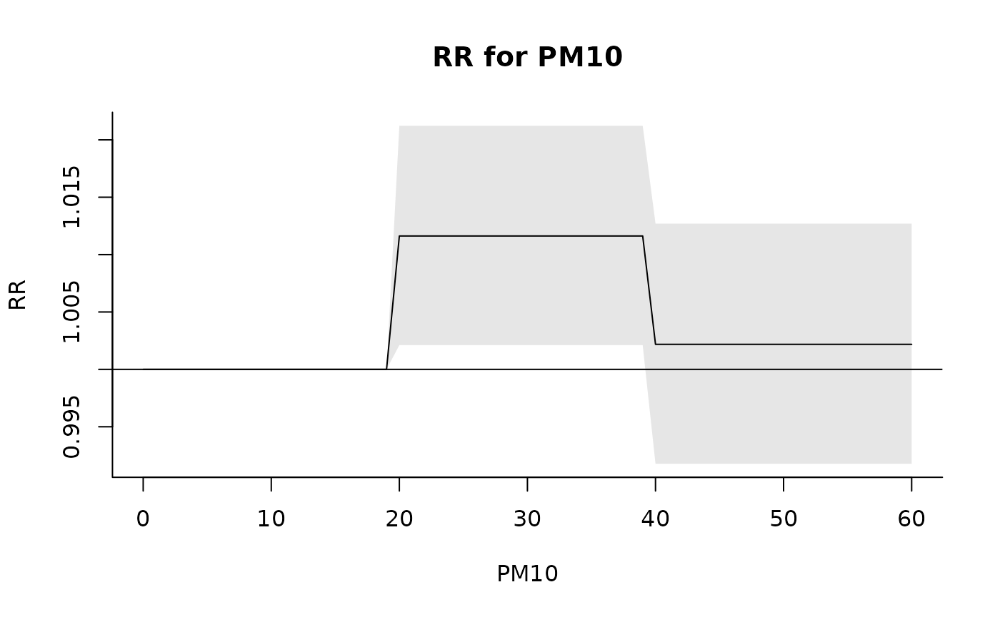
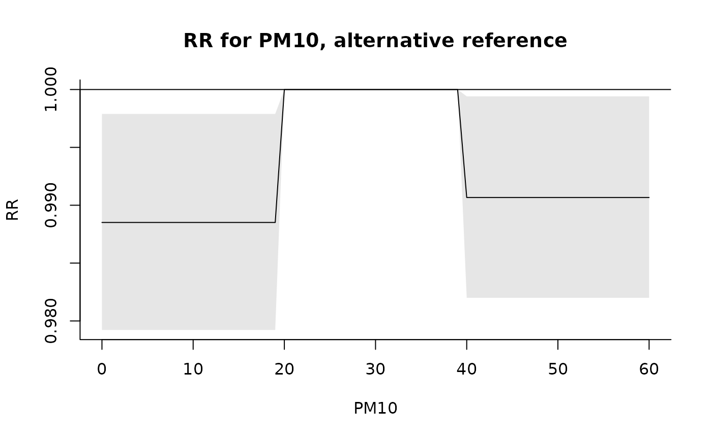
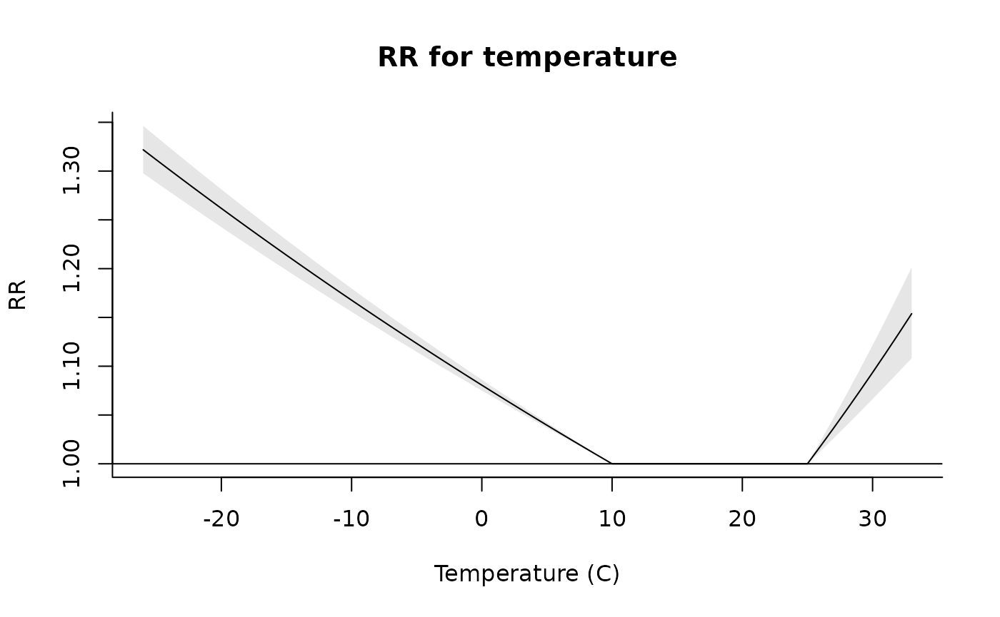
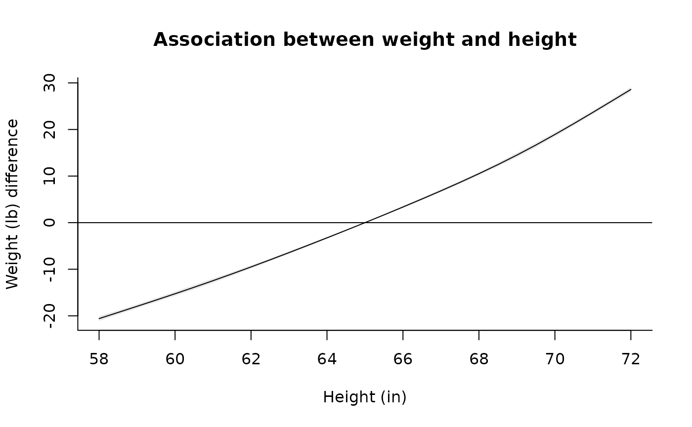

### a polynomial transformation of a simple vector
onebasis(1:5, "poly", degree = 3)
#> b1 b2 b3
#> [1,] 0.2 0.04 0.008
#> [2,] 0.4 0.16 0.064
#> [3,] 0.6 0.36 0.216
#> [4,] 0.8 0.64 0.512
#> [5,] 1.0 1.00 1.000
#> attr(,"fun")
#> [1] "poly"
#> attr(,"degree")
#> [1] 3
#> attr(,"scale")
#> [1] 5
#> attr(,"intercept")
#> [1] FALSE
#> attr(,"class")
#> [1] "onebasis" "matrix"
#> attr(,"range")
#> [1] 1 5
### a low linear threshold parameterization, with and without intercept
onebasis(1:5, "thr", thr = 3, side = "l")
#> b1
#> [1,] 2
#> [2,] 1
#> [3,] 0
#> [4,] 0
#> [5,] 0
#> attr(,"fun")
#> [1] "thr"
#> attr(,"thr.value")
#> [1] 3
#> attr(,"side")
#> [1] "l"
#> attr(,"intercept")
#> [1] FALSE
#> attr(,"class")
#> [1] "onebasis" "matrix"
#> attr(,"range")
#> [1] 1 5
onebasis(1:5, "thr", thr = 3, side = "l", intercept = TRUE)
#> b1 b2
#> [1,] 1 2
#> [2,] 1 1
#> [3,] 1 0
#> [4,] 1 0
#> [5,] 1 0
#> attr(,"fun")
#> [1] "thr"
#> attr(,"thr.value")
#> [1] 3
#> attr(,"side")
#> [1] "l"
#> attr(,"intercept")
#> [1] TRUE
#> attr(,"class")
#> [1] "onebasis" "matrix"
#> attr(,"range")
#> [1] 1 5
### relationship between PM10 and mortality estimated by a step function
b <- onebasis(chicagoNMMAPS$pm10, "strata", breaks = c(20, 40))
summary(b)
#> BASIS FUNCTION
#> observations: 5114
#> range: -3.049835 356.1768
#> df: 2
#> fun: strata
#> df: 2
#> breaks: 20 40
#> ref: 1
#> intercept: FALSE
model <- glm(death ~ b, family = quasipoisson(), chicagoNMMAPS)
pred <- crosspred(b, model, at = 0:60)
plot(pred, xlab = "PM10", ylab = "RR", main = "RR for PM10")
### changing the reference in prediction (alternative to argument ref in strata)
pred <- crosspred(b, model, cen = 30, at = 0:60)
plot(pred, xlab = "PM10", ylab = "RR", main = "RR for PM10, alternative reference")
### relationship between temperature and mortality: double threshold
b <- onebasis(chicagoNMMAPS$temp, "thr", thr = c(10, 25))
summary(b)
#> BASIS FUNCTION
#> observations: 5114
#> range: -26.66667 33.33333
#> df: 2
#> fun: thr
#> thr.value: 10 25
#> side: d
#> intercept: FALSE
model <- glm(death ~ b, family = quasipoisson(), chicagoNMMAPS)
pred <- crosspred(b, model, by = 1)
plot(pred, xlab = "Temperature (C)", ylab = "RR", main = "RR for temperature")
### extending the example for the 'ns' function in package splines
b <- onebasis(women$height, df = 5)
summary(b)
#> BASIS FUNCTION
#> observations: 15
#> range: 58 72
#> df: 5
#> fun: ns
#> knots: 60.8 63.6 66.4 69.2
#> intercept: FALSE
#> Boundary.knots: 58 72
model <- lm(weight ~ b, data = women)
pred <- crosspred(b, model, cen = 65)
plot(pred,
xlab = "Height (in)", ylab = "Weight (lb) difference",
main = "Association between weight and height"
)
### use with a user-defined function with proper attributes
mylog <- function(x, scale = min(x, na.rm = TRUE)) {
basis <- log(x - scale + 1)
attributes(basis)$scale <- scale
return(basis)
}
mylog(-2:5)
#> [1] 0.0000000 0.6931472 1.0986123 1.3862944 1.6094379 1.7917595 1.9459101
#> [8] 2.0794415
#> attr(,"scale")
#> [1] -2
onebasis(-2:5, "mylog")
#> b1
#> [1,] 0.0000000
#> [2,] 0.6931472
#> [3,] 1.0986123
#> [4,] 1.3862944
#> [5,] 1.6094379
#> [6,] 1.7917595
#> [7,] 1.9459101
#> [8,] 2.0794415
#> attr(,"fun")
#> [1] "mylog"
#> attr(,"scale")
#> [1] -2
#> attr(,"range")
#> [1] -2 5
#> attr(,"class")
#> [1] "onebasis" "matrix"